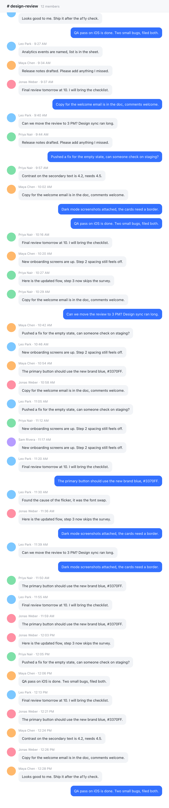

Scroll it. Record it.
Capture a whole scrolling window as one image, or record the flow as an MP4.
Scrolling screenshot

Screen recording
Stitches as you scroll
Pause, resume, stop with ⌘⇧A
Capture a whole scrolling window as one image, or record the flow as an MP4.
